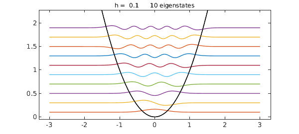
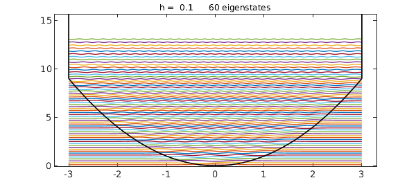
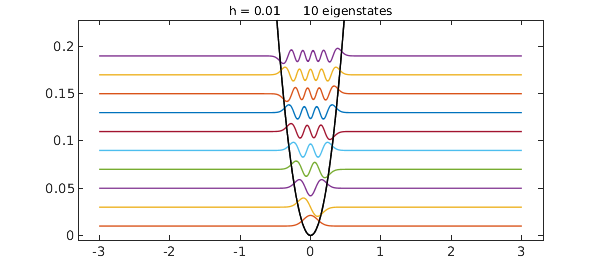
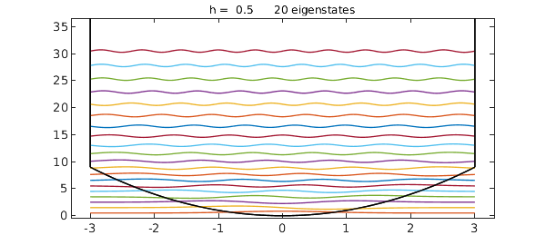
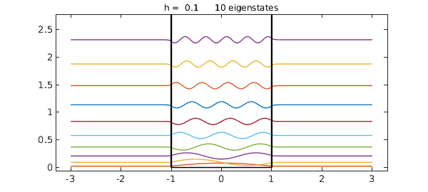
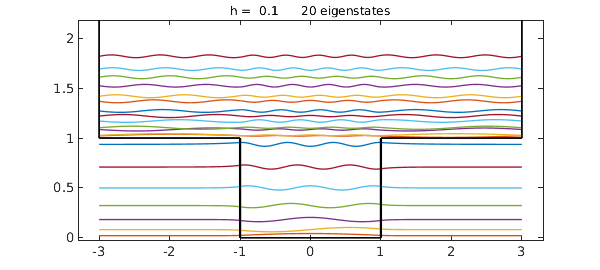
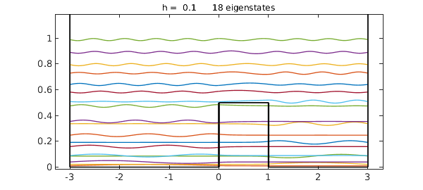
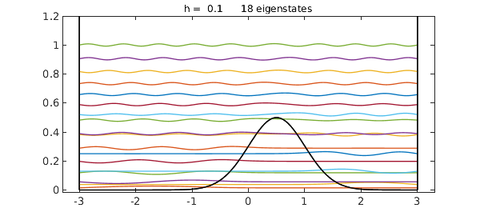

Chebfun is very good at solving eigenvalue problems in one dimension defined by smooth or piecewise-smooth coefficients. An important example of such problems is the determination of eigenstates of the Schroedinger operator, which correspond to energy levels of quantum systems. There is a special Chebfun command, quantumstates, for computing and plotting such functions.
The Schroedinger eigenvalue problem solved by quantumstates takes the form
$$ L u = \lambda u, $$
where $\lambda$ is the eigenvalue, $u(x)$ is the eigenfunction defined on a finite interval with zero boundary conditions, and $L$ is the linear operator defined by
$$ L u(x) = -h^2 u''(x) + V(x) u(x). $$
Here $h$ is a small positive parameter with default value $h=0.1$ and $V(x)$ is a potential function. The quantumstates command assumes that $V$ is a Chebfun, whose domain defines the interval the problem is posed on.
Here is a famous example, the harmonic oscillator, with $V(x)=x^2$. All our plots make use of a standard convention: each eigenfunction is plotted raised by a distance equal to its eigenvalue $\lambda$, so that one can see the eigenvalue by looking at the height. Note that the first eigenfunction is of one sign, the second has one zero, the third has two zeros, and so on.
tic
x = chebfun('x',[-3,3]);
V = x.^2;
quantumstates(V)
ans = 0.099999999999996 0.300000000000005 0.499999999999999 0.699999999999997 0.899999999999995 1.099999999999997 1.300000000000000 1.499999999999996 1.699999999999998 1.899999999999990

Notice that the eigenvalues take the regularly spaced values $h[1, 3, 5, \dots]$. The quantumstates command permits various outputs including just eigenvalues or eigenvalues and eigenfunctions, and it is also possible to suppress the plot with the string noplot; see the help text. For the rest of this Example, however, we shall just look at plots and suppress all output with a semicolon.
Suppose we want $60$ eigenstates instead of the default number $10$. Here is the result:
quantumstates(V,60);

Notice that the potential now looks like a parabola that meets vertical walls at $x=-3$ and $x=3$, for this is the effect of the Dirichlet boundary condition. To get $60$ genuine states of the harmonic oscillator, we could increase the interval from $[-3,3]$ to $[-L,L]$ with, say, $L=8$. (The accuracy improves exponentially as $L$ increases.)
Or suppose we want eigenstates for $h=0.01$ instead of $h=1$:
quantumstates(V,0.01);

When quantumstates is given two arguments like this, it takes the second to be $h$ if it is not an integer, and the number of eigenstates if it is an integer. To specify both, put them in this order:
quantumstates(V,20,0.5);

Here is an effectively infinite square well. The eigenvalues are spaced quadratically.
V = 10 - 10*(abs(x)<1); quantumstates(V);

Here is a finite square well:
V = 1 - (abs(x)<1); quantumstates(V,20);

Since we are working on a finite interval $[-L,L]$, the spectrum is discrete both below and above the level $1$, but the spacing will get closer as $L$ is increased, and it is easy to imagine that for $L=\infty$, one gets a continuum of eigenvalues above $1$ -- more precisely, a continuous spectrum. The discrete eigenfunctions below level $1$ are called bound states, whereas the states above level $1$ (in the limit $L=\infty$) are continuous states.
Here is an absolute value potential,
quantumstates(abs(x));
and here is a square root function:
quantumstates(sqrt(abs(x)+.1));
Here is a double well potential, with the barrier in the middle slightly off-center to break the symmetry:
V = 0.5*(abs(x-.5)<.5); quantumstates(V,18);

Notice that each lower eigenfunction is localized on one or the other side of the barrier, whereas the higher eigenfunctions are not localized. Inside the barrier, the eigenfunction is nonzero -- this is quantum tunnelling -- but its amplitude decreases exponentially with distance inside the barrier.
Here is an analogous problem with a smooth potential:
V = 0.5*exp(-2*(x-.5).^2); quantumstates(V,18);

Here is the total time for this Example:
toc
Elapsed time is 35.726721 seconds.
One can learn about the physics of these quantum mechanical problems in innumerable books and other sources. One reference we have consulted is the textbook by Robinett [1].
References
- Richard W. Robinett, Quantum Mechanics, 2nd ed., Oxford University Press, 2006.